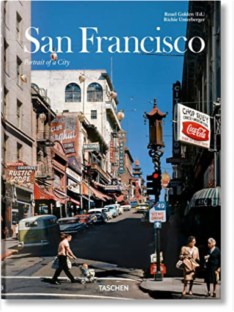

Books
Movies
Albums
Videogames
Games
BD
BD Camille
Blu-ray
Business
Camille
Comics
Cooking
Lego
Manga
Pauline
Photography
Star Wars
T'choupi
Travel
TV Shows
Un livre dont vous êtes le héro
Vinyl
Walt Disney
1
2
magnum°
michael ignatieff
maîtriser le canon eos 400d
vincent luc
4.5
photo poche, tome 2 : henri cartier-bresson
photo poche
photo poche, tome 5 : robert doisneau
photo poche
photo poche, tome 36 : robert capa
photo poche
photo poche, tome 46 : willy ronis
photo poche
photo poche, tome 81 : raymond depardon
photo poche
la photo documentaire
stéphanie calabrese roberts
american prospects
joel sternfeld
5
lightroom 3 par la pratique
gilles theophile

San Francisco, Portrait of a City
Richie Unterberger
1
2


 Made with Delicious Library Made with Delicious Library
Made with Delicious Library Made with Delicious Library